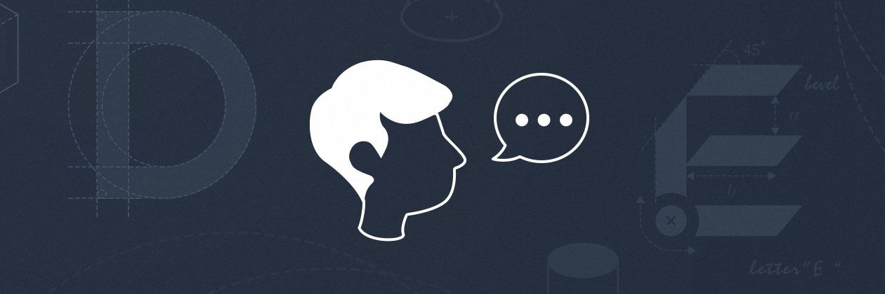
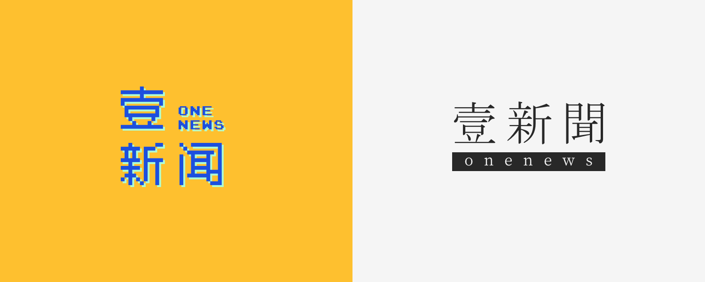

MakicLin
08月22日
作者序：成为身边人中懂设计的那一个
| 本文为付费栏目文章，您已订阅，可阅读全文 |
这可是一个正经的设计教程。无论你是如何被吸引进来的，在我们开始之前，我都希望你清楚一件事情：「你，需不需要懂点设计知识？」
先来做个选择题
假如「壹新闻」是一个媒体品牌，专注于有深度的热点报道以及政治新闻。你作为公司的决策者，需要在下面两款设计方案中选一款作为品牌的 Logo，你会如何选择？

你会选择哪一个？
这不是一道难题，凭借感觉就能猜个大概：左边这个更加年轻有活力，像是娱乐新闻；右边的更加沉稳严肃，更加符合「热点报道以及政治新闻」的定位，正是「壹新闻」需要的风格。但你是否知道为何同样的「壹新闻」会有不同感觉的？
其实原理非常简单，无非是配色和字体上的不同：
先入为主的是色彩，左边的「壹新闻」采用了橙蓝这一对对比色，显得很有活力；右边的「壹新闻」使用单色，更加沉稳。
然后是字体的选择，左边的「壹新闻」使用了像素化的字体，让人想到电子游戏和潮流文化；右边的「壹新闻」中英文都使用衬线体（类似宋体），衬线体正是传统报纸上使用的字体，会让人想起传统媒体严肃的态度和更多政治相关的选题。
最终仅仅是靠配色与字体的共同作用，就让「壹新闻」有了两种不一样的定位。
「壹新闻」的例子只需几句话就能讲清楚，对你来说一定不难。这说明：
哪怕懂一点设计知识，看到的东西也和别人有本质的不同。
作为非专业设计者，你只需要比其他人多了解一点设计常识，就会有明显的优势。
学生时代要做论文排版，大学学生会里宣传手册，工作时的表格、幻灯片，乃至长微博等等。面对这些场景，这些设计常识，就足够帮助你成为「身边人中懂设计的那一个」，这也正是这套教程的目的。
你能学会什么
至此，我对「你，需不需要懂点设计知识？」给出了我的答案，该说说教程本身了。本套教程会从五个方面出发：
- 提高审美的技巧
- 平面设计的基础知识（包括字体，配色，排版，各类「干货」）
- 一点点软件技巧（请记得工具不是最重要的，审美才是，但工具必不可少）
- 实际应用常识（宣传册制作要注意什么，幻灯片制作又有什么讲究等等）
- 奇技淫巧（一些资源获取网站，如何找到无版权图片等等）
这套教程适合谁
本套教程特别适用于大学里的活动积极分子、无设计背景但在工作中需要设计技巧的上班族、想让自己朋友圈更有面儿的爷爷奶奶、和一切对设计感有所追求的人。
我们对工具的要求并不高：一台能流畅运行 Keynote 或 PPT 的电脑即可。在后续篇幅中，我们会小心翼翼地接触到 Photoshop、Sketch 等专业应用。不必担心，这套平面设计教程并不是软件导向的教程，我们的重心在于提高审美。当你有了较高的审美水准，使用陌生软件做出来的作品也能令人赞叹。
感谢你的到来。
下一期
精选评论（0） 我的评论